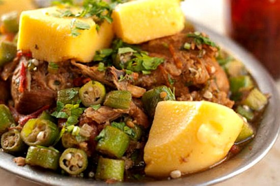

Promoções

Frango com quiabo
O Frango com Quiabo é um prato típico da cozinha mineira, preparado com frango selecionado e quiabo no ponto certo, sem perder a textura. Servido com um caldo delicioso e rico em sabor, é a verdadeira essência da tradição de Minas Gerais em cada garfada.

Tropeiro
O Feijão Tropeiro é um prato tradicional de Minas, preparado com feijão carioca, farofa crocante, torresmo e linguiça, trazendo o sabor rústico e acolhedor da nossa terra. Uma combinação perfeita de ingredientes simples que tornam essa iguaria cheia de sabor e história.